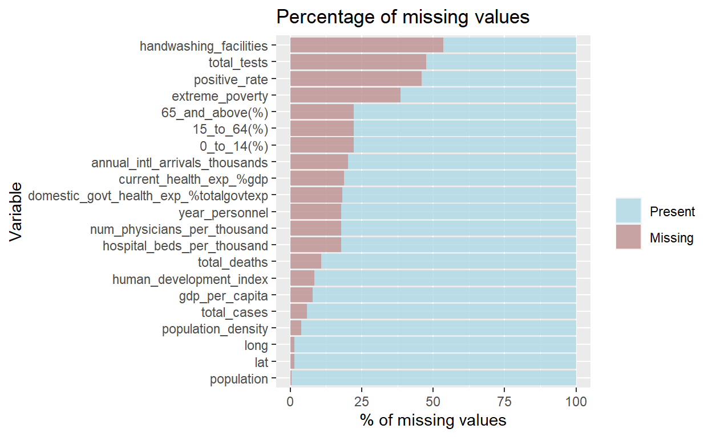
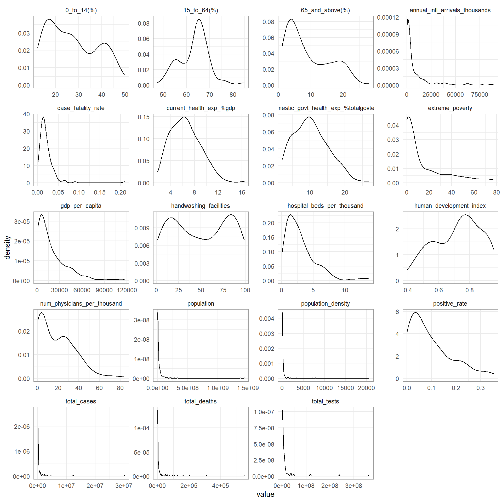
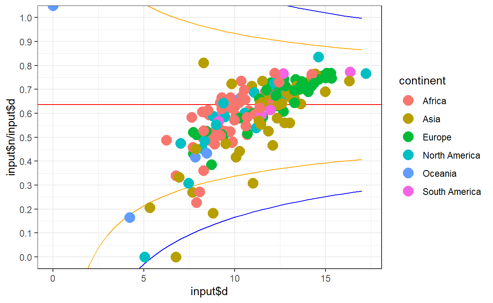
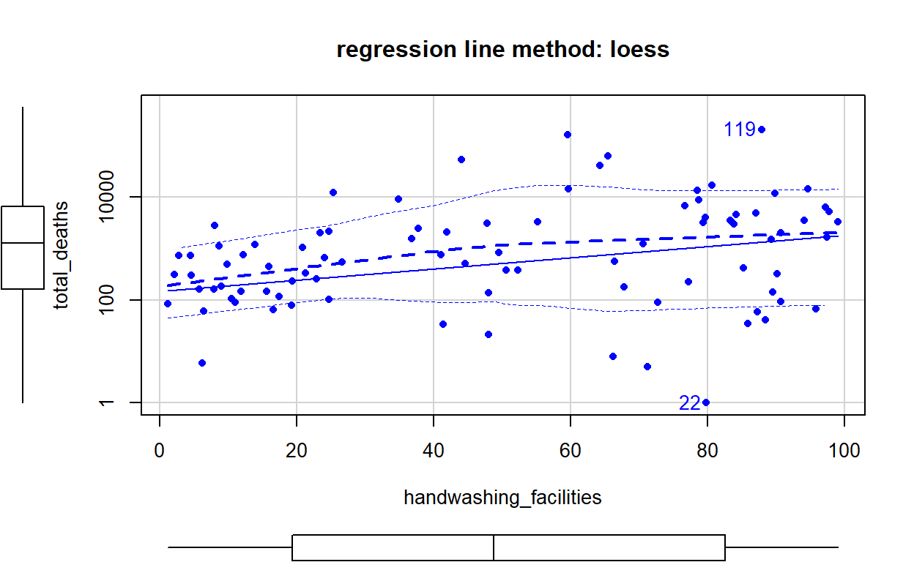
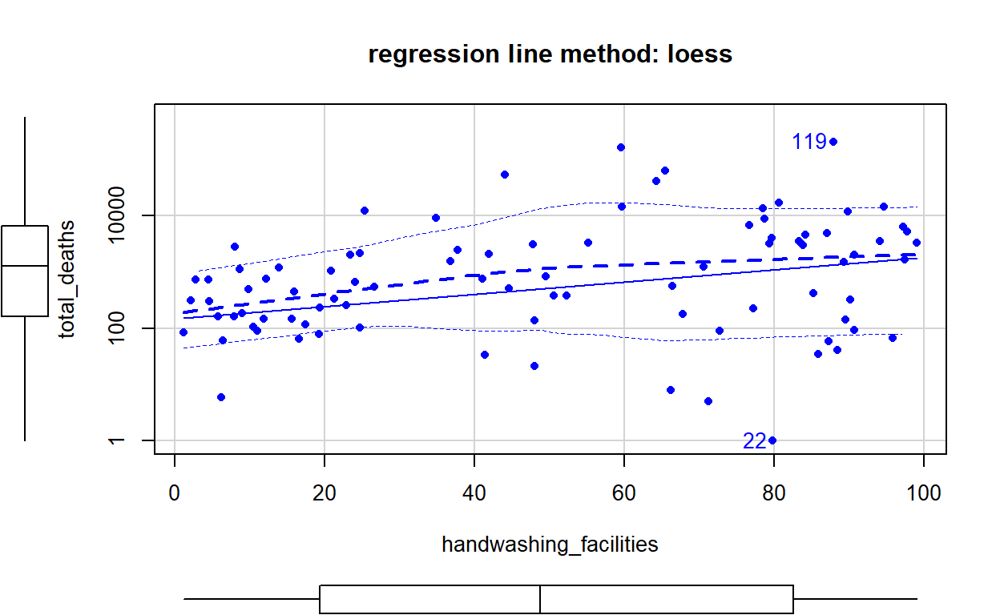
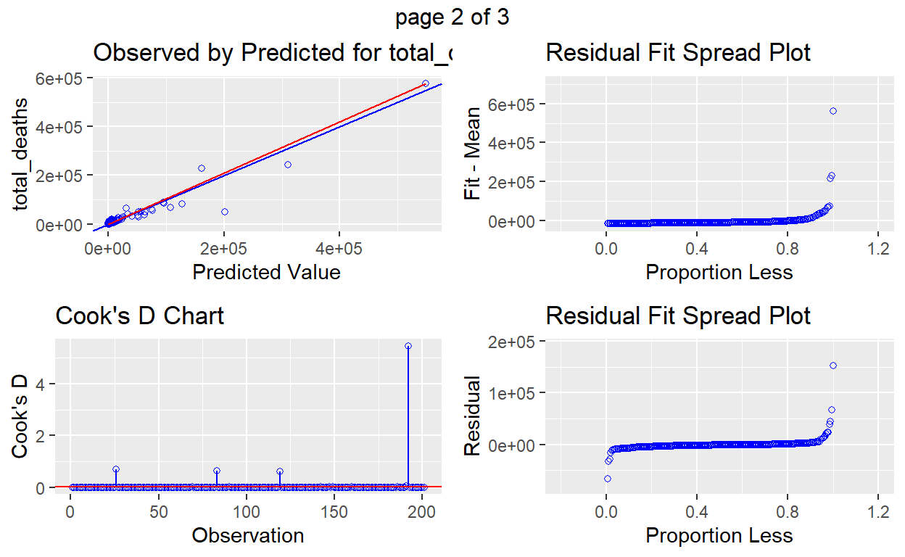
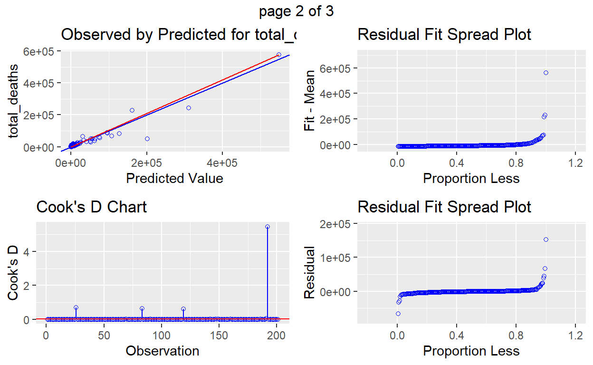

Overview
In December 2019, the Coronavirus (COVID-19) has caught the world’s attention with the first COVID-19 cases reported in Wuhan, Hubei, China. Since then, the virus has spread like wildfire across the globe, with countries struggling to contain the virus to curb further spread and resurgence.
Experts believe that COVID-19 is less deadly but more infectious than the Severe Acute Respiratory Syndrome (SARS) virus in 2003. Although the number of deaths due to COVID-19 reached a staggering 2.85 million worldwide, its case fatality ratio or rate (defined as the proportion of deaths among a defined population of interest, in this case, the number of COVID-19 cases) is estimated at 1.4% to 3.4%, a far cry from the 9.6% of SARS and 34.3% of the lesser known Middle East Respiratory Syndrome coronavirus (MERS-CoV). Of the 2.85 million deaths, how do countries compare against each other? This assignment aims to visualise the relationships between health, economic and population structure indicators with COVID-19 deaths across countries.
Literature review of current visualisations on COVID-19 deaths
Most visualisations report the death toll by location using geo-spatial, time-series and/or in tabular form (see Figure 1).
![Figure 1: Current visualisations on COVID-19 deaths. (a) Choropleth map of cumulative confirmed deaths per million people. Source: https://ourworldindata.org/covid-deaths (b) Proportional symbol map showing the case fatality ratio by location. Actual numbers are reported on the right side panel. Source: https://coronavirus.jhu.edu/map.html (c) Time-series of cumulative confirmed deaths per million people. Countries can be added or removed. Source: https://ourworldindata.org/covid-deaths (d) Table with horizontal bar charts and another time-series visualisation on the deaths reported per day. Source: https://pandemic.internationalsos.com/2019-ncov/covid-19-data-visualisation](images/currviz.jpg)
These visualisations focus on comparing countries based on the number of deaths or case fatality rates. Comparisons are made based on visual encodings such as colour and size of data points. When used appropriately, users are able to perceive the information effectively (Figure 1-a to c). We can see that there is a lot of visual clutter when more countries are added, as seen in the time-series graph in Figure 1-d.
More details on number of deaths for individual countries are also provided via interactivity in some visualisations (see Figure 1-c for example). However, the comparisons are limited to the countries selected and it could be challenging to make comparisons when more countries are added. On the other hand, the table provides a single-view of the details across countries in descending order, but the numbers could be overwhelming for users to process even with the horizontal bar charts. Furthermore, a tabular layout makes it difficult to compare specific countries of interest.
There are lesser analyses that compare deaths or case fatality with other indicators. Some analyses study the impact of COVID-19 on the indicators while others study the impact of the indicators on the COVID-19 numbers. The review will focus on the analysis or visualisations used, which can potentially be employed to both types of analyses.
Scatterplot of economic indicators against number of deaths per million

The scatterplot is useful in showing the relationship between two independent variables. In this scatterplot, size and colour scales are used to encode number of deaths and continent respectively. The size of the data points are not obvious from the graph due to the size range used, the 3-character country code labels and the choice of colour for Europe (the green stands out too much). The overlap in data points belonging to the same continent also make it difficult to identify the data points. There is no interactivity in this visualisation.
Funnel plot of case fatality rate against number of confirmed cases
There are two similar visualisations created specifically for COVID-19 case fatality rate for counties in the US by a SAS researcher Rick Wicklin (see Figure 3). Unlike the time-series, geo-spatial and tabular visualisations where users make comparisons based on the face-value of the numbers, the funnel plot seeks to highlight any anomalies from the expected range of the numerical values based on statistical concepts. Note that the factors plotted on a funnel plot are dependent on each other, i.e. the number of confirmed cases is used to calculate the case fatality rate.

The drawback of the visualisations is that the funnel plots are static with no interactivity: users are unable to identify the other data points that are not labelled by the author.
Tabular presentation of correlation index between socio-economic indicators and number of deaths per million
The study “Rich at risk: socio-economic drivers of COVID-19 pandemic spread” by Gangemi, S., Billeci, L. & Tonacci, A. (2020) seeks to understand the spread of the COVID-19 virus driven by socio-economic factors and long-distance transportations. The results are presented in a table (see Figure 4). Although the presentation of the results are not visually appealing, this study sheds light on the current analysis performed for COVID-19 deaths.

Scatterplot with fit line and regression model summary table to predict number of new deaths
The visualisations discussed thus far are bivariate in nature: analysis of each factor with the number of deaths. There are very few multivariate analysis done, and of those conducted, most of them are presented in tabular form or described in text. There is one study on regression models to predict the number of COVID-19 new deaths, which presents its findings visually in the research paper (see Figure 5).

Although the intention of the assignment is an exploratory analysis, we can still gain some insights from the visualisation used in this predictive regression analysis. It is noted that the regression models built are to predict the number of new deaths by day for a particular location, Ethiopia, solely based on COVID-19 related indicators. The scatterplot with fit lines allows users to visually compare the different regression models built. There is no interactivity in this graph as it is used for reporting purposes.
Suggested visualisations and R packages
There are gaps in the current visualisations in supporting the intended analysis of this assignment. The majority of interactive visualisations are univariate presented on maps or in time series, while the bivariate and multivariate analysis of the country indicators and the number of deaths are largely static.
In this assignment, we will attempt to create interactive visualisations for bivariate (scatterplot and funnel plot) and multivariate analysis (multiple linear regression) of the number of deaths due to COVID-19 with selected health-socio-economic indicators across countries.
The following R packages will be explored:
| Visualisation | Packages |
|---|---|
| Scatterplot | ggplot, ggstatsplot, car |
| Funnel Plot | ggplot, FunnelPlotR, metafor, metaviz, funnelR |
| Multivariate Analysis | mlr, olsrr |
| Interactivity | plotly, ggvis |
Data Preparation
All data extraction and wrangling are done in R using the tidyverse suite of packages.
Install and load all necessary packages
packages = c('tidyverse', 'naniar', 'corrr',
'ggstatsplot', 'car', 'ggExtra',
'FunnelPlotR', 'metafor', 'metaviz', 'funnelR',
'mlr', 'olsrr',
'plotly', 'ggvis')
for(p in packages){
if(!require(p, character.only = T)){
install.packages(p)
}
library(p, character.only = T)
}
Import and extract relevant data
Data by country is obtained from various sources, as shown in the following table:
| Our World in Data (owid) | COVID-19 tests, positive rates, country to latitude-longitude coordinates mapping |
| John Hopkins University (JHU) | COVID-19 cases, deaths |
| World Bank | Population age structure, GDP per capita, poverty indicator |
| UNdata | Health expenditure, healthcare facilities and capacity indicators |
| United Nations Development Programme (UNDP) | Human Development Index (HDI), international inbound tourists |
The data is stored across eight files and read_csv() is used to import and extract the relevant columns from each file into R.
covid <- read_csv("./data/owid-covid-latest.csv",
col_types = cols_only(
"iso_code" = "c",
"continent" = "c",
"location" = "c",
"last_updated_date" = "D",
"total_cases" = "n",
"total_deaths" = "n",
"total_tests" = "n",
"positive_rate" = "n",
"test_units" = "c",
"population" = "n",
"population_density" = "n",
"gdp_per_capita" = "n",
"extreme_poverty" = "n",
"handwashing_facilities" = "n",
"hospital_beds_per_thousand" = "n",
"human_development_index" = "n"),
locale = locale(date_format = "%Y-%m-%d")
)
health_exp <- read_csv("./data/UNdata_HealthExpenditure.csv",
skip = 2,
col_names = c("region/country/area","year_exp","series","percentage"),
col_types = "_cncn__")
health_personnel <- read_csv("./data/UNdata_HealthPersonnel.csv",
skip = 2,
col_names = c("region/country/area","year_personnel","series","value"),
col_types = "_cncn__")
pop_prop <- list.files(path="./data/", pattern="WorldBank_PopProp_", full.names = TRUE) %>%
map_df(~read_csv(.,
skip = 4,
col_types = cols_only(
"Country Name" = "c",
"Indicator Name" = "c",
"2019" = "n")
)
)
intl_tourists <- read_csv("./data/UNDP_Intl_inbound_tourists_(thousands).csv",
skip = 6,
col_types = "_c________________________n_",
na = c("..")
)
geo_lookup <- read_csv("./data/UID_ISO_FIPS_LookUp_Table.csv",
col_types = "c_c_____nn__") %>%
filter(nchar(UID) <= 3) %>%
select(iso3, Lat, Long_) %>%
rename("lat" = "Lat", "long" = "Long_")
Wrangle and combine the data
Before combining the data frames into one main data frame for analysis, we need to explore and prepare each data frame.
pop_prop_cleaned <- pivot_wider(pop_prop, names_from = "Indicator Name", values_from = "2019") %>%
rename("0_to_14(%)" = "Population ages 0-14 (% of total population)",
"15_to_64(%)" = "Population ages 15-64 (% of total population)",
"65_and_above(%)" = "Population ages 65 and above (% of total population)")
intl_tourists_cleaned <- rename(intl_tourists,
"annual_intl_arrivals_thousands" = "2011-2018")
health_personnel_phy <- health_personnel %>%
group_by(`region/country/area`, `series`) %>%
slice(which.max(`year_personnel`)) %>%
filter(`series` == "Health personnel: Physicians (per 1000 population)") %>%
pivot_wider(names_from = "series", values_from = "value") %>%
rename("num_physicians_per_thousand" = "Health personnel: Physicians (per 1000 population)")
health_exp_cleaned <- health_exp %>%
group_by(`region/country/area`, `series`) %>%
slice(which.max(`year_exp`)) %>%
pivot_wider(names_from = "series", values_from = "percentage") %>%
rename("current_health_exp_%gdp" = "Current health expenditure (% of GDP)",
"domestic_govt_health_exp_%totalgovtexp" = "Domestic general government health expenditure (% of total government expenditure)")
After cleaning the individual data frames, we can now combine and store the data in a single data frame.
covid_deaths <- covid %>%
left_join(pop_prop_cleaned, by = c("location" = "Country Name")) %>%
left_join(intl_tourists_cleaned, by=c("location" = "Country")) %>%
left_join(health_personnel_phy, by=c("location" = "region/country/area")) %>%
left_join(health_exp_cleaned, by=c("location" = "region/country/area")) %>%
left_join(geo_lookup, by=c("iso_code" = "iso3")) %>%
mutate(case_fatality_rate = total_deaths/total_cases) %>%
filter(!is.na(continent))
We will reorder the columns to group similar variables.
col_order <- c("iso_code", "continent", "location", "last_updated_date",
"total_cases", "total_deaths", "case_fatality_rate", "total_tests", "positive_rate",
"hospital_beds_per_thousand", "num_physicians_per_thousand",
"year_personnel", "handwashing_facilities",
"gdp_per_capita", "current_health_exp_%gdp", "domestic_govt_health_exp_%totalgovtexp",
"population", "population_density", "0_to_14(%)", "15_to_64(%)", "65_and_above(%)",
"extreme_poverty", "human_development_index",
"annual_intl_arrivals_thousands",
"lat", "long")
covid_deaths <- covid_deaths[, col_order]
glimpse(covid_deaths)
Rows: 202
Columns: 26
$ iso_code <chr> "AFG", "ALB", "DZA"~
$ continent <chr> "Asia", "Europe", "~
$ location <chr> "Afghanistan", "Alb~
$ last_updated_date <date> 2021-03-27, 2021-0~
$ total_cases <dbl> 56290, 123641, 1167~
$ total_deaths <dbl> 2469, 2204, 3077, 1~
$ case_fatality_rate <dbl> 0.043862142, 0.0178~
$ total_tests <dbl> NA, 517102, NA, 162~
$ positive_rate <dbl> NA, 0.173, NA, 0.09~
$ hospital_beds_per_thousand <dbl> 0.50, 2.89, 1.90, N~
$ num_physicians_per_thousand <dbl> 2.78, 12.16, 17.19,~
$ year_personnel <dbl> 2016, 2016, 2018, 2~
$ handwashing_facilities <dbl> 37.746, NA, 83.741,~
$ gdp_per_capita <dbl> 1803.987, 11803.431~
$ `current_health_exp_%gdp` <dbl> 11.7772, NA, 6.3743~
$ `domestic_govt_health_exp_%totalgovtexp` <dbl> 2.3191, 14.6789, 10~
$ population <dbl> 38928341, 2877800, ~
$ population_density <dbl> 54.422, 104.871, 17~
$ `0_to_14(%)` <dbl> 42.47227, 17.39956,~
$ `15_to_64(%)` <dbl> 54.91193, 68.39781,~
$ `65_and_above(%)` <dbl> 2.615794, 14.202631~
$ extreme_poverty <dbl> NA, 1.1, 0.5, NA, N~
$ human_development_index <dbl> 0.511, 0.795, 0.748~
$ annual_intl_arrivals_thousands <dbl> NA, 5340, 2657, 304~
$ lat <dbl> 33.93911, 41.15330,~
$ long <dbl> 67.709953, 20.16830~Explore the data
Missingness
missing_values <- covid_deaths %>%
gather(key = "key", value = "val") %>%
mutate(isna = is.na(val)) %>%
group_by(key) %>%
mutate(total = n()) %>%
group_by(key, total, isna) %>%
summarise(num.isna = n()) %>%
mutate(pct = num.isna / total * 100)
levels <- (missing_values %>% filter(isna == TRUE) %>%
arrange(pct))$key
percentage_plot <- missing_values %>%
ggplot() +
geom_bar(aes(x = reorder(key, pct), y = pct, fill=isna),
stat = "identity",
alpha=0.8) +
scale_x_discrete(limits = levels) +
scale_fill_manual(name = "",
values = c("lightblue","rosybrown"),
labels = c("Present", "Missing")) +
coord_flip() +
labs(title = "Percentage of missing values", x = 'Variable', y = "% of missing values")
percentage_plot

gg_miss_upset(covid_deaths,
nsets = n_var_miss(covid_deaths),
nintersects = NA,
text.scale = c(2,2,2,2,1.5,2),
set_size.show = TRUE,
set_size.numbers_size = 4)

Distribution
check_distribution <- covid_deaths %>%
select(!year_personnel) %>%
pivot_longer(cols = total_cases:annual_intl_arrivals_thousands,
names_to = "variable",
values_to = "value") %>%
ggplot(aes(x=value)) +
geom_density() +
facet_wrap(~variable, nrow = 5, ncol = 4, scales = "free") +
theme_minimal() +
theme(panel.border = element_rect(colour="grey60", fill = NA))
check_distribution

Outliers
check_outlier <- covid_deaths %>%
select(!year_personnel) %>%
pivot_longer(cols = total_cases:annual_intl_arrivals_thousands,
names_to = "variable",
values_to = "value") %>%
ggplot(aes(x=variable, y=value)) +
geom_boxplot() +
facet_wrap(~variable, ncol = 7, scales = "free") +
theme_minimal() +
theme(panel.border = element_rect(colour="grey60", fill = NA),
axis.text.x.bottom = element_blank())
check_outlier

Correlation
check_correlation <- correlate(covid_deaths %>%
select(-c(iso_code,
continent,
location,
last_updated_date,
year_personnel,
lat,
long)))
rplot(check_correlation) +
scale_size_continuous(range = c(0,4)) +
theme(axis.text.x = element_text(size=7, angle=45, hjust=0.95),
axis.text.y = element_text(size=7))

Prototype
Scatterplot
Use ggstatsplot::ggscatterstats
Available options: marginal distribution and statistical tests. No option for smoothing.
scatter_ggscatterstats_histogram <- ggscatterstats(covid_deaths,
x = handwashing_facilities,
y = total_deaths,
marginal.type = "histogram",
title = "Histogram",
ggplot.component = list(scale_y_log10()))
scatter_ggscatterstats_density <- ggscatterstats(covid_deaths,
x = handwashing_facilities,
y = total_deaths,
marginal.type = "density",
title = "Density",
ggplot.component = list(scale_y_log10()))
scatter_ggscatterstats_densigram <- ggscatterstats(covid_deaths,
x = handwashing_facilities,
y = total_deaths,
marginal.type = "densigram",
title = "Density + Histogram",
ggplot.component = list(scale_y_log10()))
scatter_ggscatterstats_boxplot <- ggscatterstats(covid_deaths,
x = handwashing_facilities,
y = total_deaths,
marginal.type = "boxplot",
title = "Boxplot",
ggplot.component = list(scale_y_log10()))
scatter_ggscatterstats_violin <- ggscatterstats(covid_deaths,
x = handwashing_facilities,
y = total_deaths,
marginal.type = "violin",
title = "Violin",
ggplot.component = list(scale_y_log10()))
combine_plots(plotlist = list(scatter_ggscatterstats_histogram,
scatter_ggscatterstats_density,
scatter_ggscatterstats_densigram,
scatter_ggscatterstats_boxplot,
scatter_ggscatterstats_violin),
annotation.args = list(title="Comparing types of marginal distribution"),
plotgrid.args = list(nrow=2))

scatter_ggscatterstats_parametric <- ggscatterstats(covid_deaths,
x = handwashing_facilities,
y = total_deaths,
type = "parametric",
marginal.type = "boxplot",
title = "Parametric: Pearson's correlation coefficient",
ggplot.component = list(scale_y_log10()))
scatter_ggscatterstats_nonparametric <- ggscatterstats(covid_deaths,
x = handwashing_facilities,
y = total_deaths,
type = "non-parametric",
marginal.type = "boxplot",
title = "Non-parametric: Spearman's rank correlation coefficient",
ggplot.component = list(scale_y_log10()))
scatter_ggscatterstats_robust <- ggscatterstats(covid_deaths,
x = handwashing_facilities,
y = total_deaths,
type = "robust",
marginal.type = "boxplot",
title = "Robust: Winsorized Pearson correlation coefficient",
ggplot.component = list(scale_y_log10()))
scatter_ggscatterstats_bayes <- ggscatterstats(covid_deaths,
x = handwashing_facilities,
y = total_deaths,
type = "bayes",
marginal.type = "boxplot",
title = "Bayesian: Pearson's correlation coefficient",
ggplot.component = list(scale_y_log10()))
combine_plots(plotlist = list(scatter_ggscatterstats_parametric,
scatter_ggscatterstats_nonparametric,
scatter_ggscatterstats_robust,
scatter_ggscatterstats_bayes),
annotation.args = list(title="Comparing types of test"),
plotgrid.args = list(nrow=2))

ggplotly(scatter_ggscatterstats)
Unable to make interactive as not compatible.
Use car::scatterplot
x_variable <- covid_deaths$handwashing_facilities
y_variable <- covid_deaths$total_deaths
scatter_scatterplot_lm <- scatterplot(y_variable ~ x_variable,
covid_deaths,
boxplots = "xy",
id = TRUE,
log = "y",
pch=16,
main = "regression line method: lm",
xlab = "handwashing_facilities",
ylab = "total_deaths",
regLine = list(method=lm, lty=1, lwd=1),
smooth = list(smoother=loessLine,lty.var=2, lwd.var=0.5))
scatter_scatterplot_loess <- scatterplot(y_variable ~ x_variable,
covid_deaths,
boxplots = "xy",
id = TRUE,
log = "y",
pch=16,
main = "regression line method: loess",
xlab = "handwashing_facilities",
ylab = "total_deaths",
regLine = list(method=loess, lty=1, lwd=1),
smooth = list(smoother=loessLine,lty.var=2, lwd.var=0.5))
 

scatter_scatterplot_loessline <- scatterplot(y_variable ~ x_variable,
covid_deaths,
boxplots = "xy",
id = TRUE,
log = "y",
pch=16,
main = "smoother: loessLine",
xlab = "handwashing_facilities",
ylab = "total_deaths",
regLine = list(method=loess, lty=1, lwd=0.5),
smooth = list(smoother=loessLine,lty.var=2, lwd.var=0.5))
scatter_scatterplot_gamline <- scatterplot(y_variable ~ x_variable,
covid_deaths,
boxplots = "xy",
id = TRUE,
log = "y",
pch=16,
main = "smoother: gamLine",
xlab = "handwashing_facilities",
ylab = "total_deaths",
regLine = list(method=mgcv::gam, lty=1, lwd=0.5),
smooth = list(smoother=gamLine,lty.var=2, lwd.var=0.5))
scatter_scatterplot_quantregline <- scatterplot(y_variable ~ x_variable,
covid_deaths,
boxplots = "xy",
id = TRUE,
log = "y",
pch=16,
main = "smoother: quantregLine",
xlab = "handwashing_facilities",
ylab = "total_deaths",
regLine = list(method=quantreg::rqss, lty=1, lwd=0.5),
smooth = list(smoother=quantregLine,lty.var=2, lwd.var=0.5))
 

able to choose different smoothers and methods to draw the best fit line
limited customisations to the plot aesthetics
unable to make plot interactive
Draw from scratch with ggplot
x_variable <- covid_deaths$handwashing_facilities
y_variable <- covid_deaths$total_deaths
scatter_ggplot_loess <- ggplot(covid_deaths,
aes(x=x_variable, y=y_variable, size=population)) +
geom_point(aes(colour=continent)) +
scale_y_log10() +
ggtitle("loess") +
xlab("handwashing facilities") +
ylab("total deaths") +
geom_smooth(method = "loess")
scatter_ggplot_lm <- ggplot(covid_deaths,
aes(x=x_variable, y=y_variable, size=population)) +
geom_point(aes(colour=continent)) +
scale_y_log10() +
ggtitle("lm") +
xlab("handwashing facilities") +
ylab("total deaths") +
geom_smooth(method = "lm")
scatter_ggplot_glm <- ggplot(covid_deaths,
aes(x=x_variable, y=y_variable, size=population)) +
geom_point(aes(colour=continent)) +
scale_y_log10() +
ggtitle("glm") +
xlab("handwashing facilities") +
ylab("total deaths") +
geom_smooth(method = "glm")
scatter_ggplot_gam <- ggplot(covid_deaths,
aes(x=x_variable, y=y_variable, size=population)) +
geom_point(aes(colour=continent)) +
scale_y_log10() +
ggtitle("gam") +
xlab("handwashing facilities") +
ylab("total deaths") +
geom_smooth(method = "gam")
combine_plots(plotlist = list(scatter_ggplot_loess,
scatter_ggplot_lm,
scatter_ggplot_glm,
scatter_ggplot_gam),
annotation.args = list(title="Comparing types of smoothing method"),
plotgrid.args = list(nrow=2))

scatter_ggplot_base <- ggplot(covid_deaths,
aes(x=x_variable, y=y_variable, size=population)) +
geom_point(aes(colour=continent)) +
scale_y_log10() +
xlab("handwashing facilities") +
ylab("total deaths") +
geom_smooth() +
theme(legend.position = "none")
scatter_ggplot_histogram <- ggMarginal(scatter_ggplot_base,
type="histogram",
fill="lightblue")
scatter_ggplot_density <- ggMarginal(scatter_ggplot_base,
type="density")
scatter_ggplot_boxplot <- ggMarginal(scatter_ggplot_base,
type="boxplot")
combine_plots(plotlist = list(scatter_ggplot_histogram,
scatter_ggplot_density,
scatter_ggplot_boxplot),
annotation.args = list(title="Comparing types of marginal distribution"),
plotgrid.args = list(nrow=1))

ggplotly(scatter_ggplot_lm)
scatter_ggplot_miss <- ggplot(covid_deaths,
aes(x=x_variable, y=y_variable, colour = continent)) +
geom_miss_point() +
scale_y_log10()
scatter_ggplot_miss

ggplotly(scatter_ggplot_miss)
Summary of R packages for scatterplot
scatter_ggstatsplot <- ggscatterstats(covid_deaths,
x = handwashing_facilities,
y = total_deaths,
marginal.type = "densigram",
title = "ggstatsplot::ggscatterstats with densigram",
ggplot.component = list(scale_y_log10()))
scatter_ggplot_base <- ggplot(covid_deaths,
aes(x=x_variable, y=y_variable, size=population)) +
geom_point(aes(colour=continent)) +
scale_y_log10() +
ggtitle("ggplot with marginal boxplot") +
xlab("handwashing facilities") +
ylab("total deaths") +
geom_smooth() +
theme(legend.position = "none")
scatter_ggplot <- ggMarginal(scatter_ggplot_base, type = "boxplot")
combine_plots(plotlist = list(scatter_ggstatsplot,
scatter_ggplot),
annotation.args = list(title="Comparison of scatterplots"),
plotgrid.args = list(nrow=1))


Funnel Plot
Multivariate Analysis
Interactivity
Storyboard